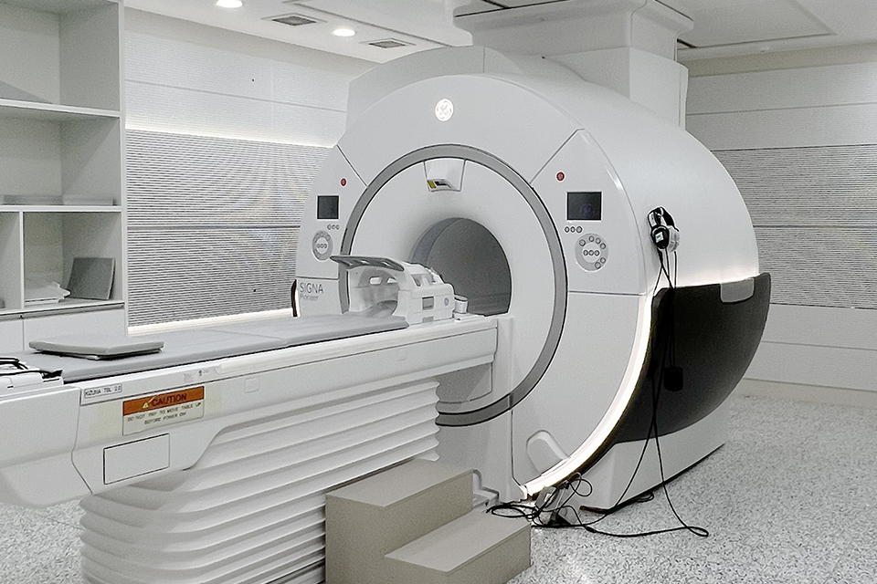
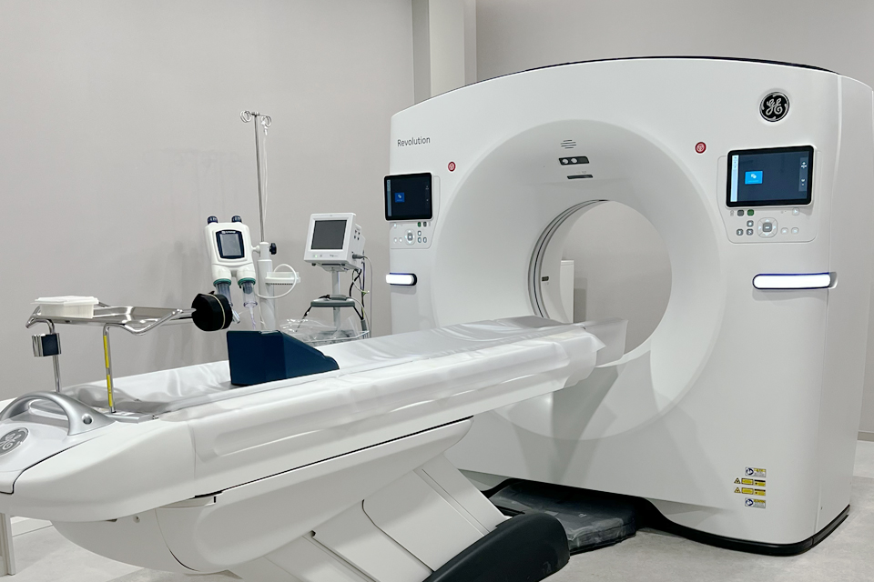
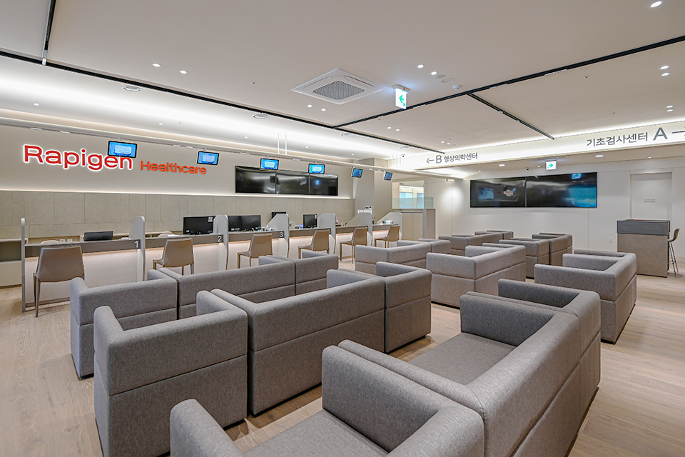
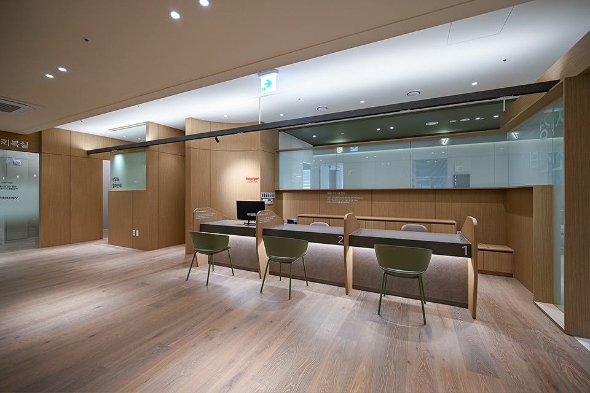

HEALTH CHECK GUIDE
건강검진
주의사항
정확한 검사와 편안한 검진을 위한 준비.
예약하신 검사항목에 맞춰 방문 전 꼭 확인해 주세요.
검진 전날 준비사항
금식
- 검진 2~3일 전부터 음주와 기름진 음식은 피하시기 바랍니다.
- 검진 전날 저녁식사는 가볍게 드시고, 저녁 7시 이후부터 검진일까지 금식해 주세요.
- 검진 당일 아침식사는 물론, 금식 기간 동안 물·껌·사탕·담배도 모두 금지됩니다.
- 금식 시간이 동일하더라도 개인 상태에 따라 불완전 검사가 있을 수 있습니다. 금식 시간은 필요시 유연하게 조절될 수 있으며, 공복 유지가 어려운 경우 검사 진행이 제한될 수 있습니다.
대장내시경 예약 고객은 별도로 안내받으신 대장내시경 안내문에 따라 준비해 주세요.
약물 복용
- 평소 복용 중인 약물이 있다면 주치의 상담 후 복용 유지 또는 중단 여부, 재복용 시기를 반드시 확인해 주세요.
- 고혈압 약은 검진 당일 아침 6시 이전에 소량의 물과 함께 복용하셔도 됩니다.
- 당뇨약 및 인슐린은 검진 당일 아침에 복용하지 마시고 지참해 주세요.
- 항혈전제(아스피린, 플라빅스 등) 또는 항응고제(헤파린 등)는 내시경 중 조직검사나 용종절제 시 출혈 위험이 있으므로, 주치의에게 확인 후 중단 기간을 결정해 주세요.
- 뇌질환·심장질환 등 기저질환이 있거나 관련 약물을 복용 중이라면 반드시 주치의와 사전 상담 후 내원해 주세요.
- 수술력·입원력, 진단받은 질환, 약물 복용력(알레르기 포함), 가족력이 있는 경우 주치의 확인 후 필요시 소견서가 필요할 수 있습니다. 사전에 전화로 검사 가능 여부를 확인해 주세요.
5일 이상 약 중단을 권유받으신 분은 검사 전 검진센터(1544-5189)로 반드시 연락해 주세요.
대변 채취
- 검진 전날 또는 당일, 채변용기에 부착된 채변막대로 대변 겉면을 몇 차례 문질러 채취해 주세요.
- 대장내시경 예약 고객은 장정결제 복용 전에 반드시 채변해 주세요.
- 검사의 정확도를 위해 채취한 대변은 차고 서늘한 곳에 보관해 주세요.
- 여성 고객은 생리 기간에 검사 결과에 제한이 있을 수 있으므로, 가능하면 생리 기간을 피해 검사 일정을 조율해 주세요.
검진 당일 유의사항
내원 준비
- 대장내시경이 포함된 경우 금속 제품은 제거하고, 체내 금속 삽입물이 있으면 반드시 직원에게 알려주세요.
- 콘택트렌즈(하드·소프트) 착용자는 검진 당일 안경 착용을 권장합니다.
- 하복부(전립선·자궁) 초음파 대상자는 검사 전 소변을 참고 내원해 주세요.
- 수면(의식하진정법) 검사가 포함된 경우 검진 당일 자가운전은 불가하므로 대중교통을 이용해 주세요.
- 채혈 후 어지러움·알레르기 등 이상 반응을 경험한 적이 있다면 사전에 의료진에게 알려주세요.
당일 복용약
- 항고혈압제·부정맥치료제·항경련제를 복용하시는 고객은 오전 5시경 소량의 물로 복용해 주세요.
- 당뇨약을 복용하는 고객은 건강검진 당일 아침 인슐린이나 당뇨약 복용을 금합니다.
위·수면내시경 안내
위내시경
- 검진 전날 저녁 7시 이후부터 완전 금식이 필요하며, 당일에는 물을 포함한 모든 음식물 섭취가 불가합니다.
- 대장내시경을 함께 진행한다면 대장내시경 안내문에 따라 준비해 주세요.
- 최근 치과 치료, 틀니, 흔들리는 치아가 있는 경우 치아 손상 위험으로 위내시경이 제한되거나 비수면으로 진행될 수 있습니다.
수면내시경
(의식하진정법)
- 만 70세 이상인 경우 수면내시경 진행이 제한될 수 있어 일반 내시경을 권장합니다.
- 고도비만, 체중 100kg 이상인 경우 일부 검사가 불가할 수 있습니다.
- 수면 중 무호흡증이나 심한 코골이가 있는 분은 수면 검사 진행이 제한될 수 있습니다.
- 검사 당일 검지 네일아트, 귀걸이·피어싱 등 액세서리는 모두 제거해 주세요.
- 수면 검사 시 안전을 위해 대중교통을 이용해 주세요.
대장내시경 안내
검사 전 준비
- 반드시 안내받으신 대장내시경 검사 안내문을 확인해 주세요. 검사 3일 전부터 식이조절을 하고, 정해진 시간에 장정결제를 복용해 주세요.
- 식욕억제 주사(위고비·마운자로·삭센다 등)를 맞고 계신 분은 검사일 5일 전부터 식이조절을 진행해 주세요.
- 변비가 있으신 분은 평소 물을 2리터 이상 드시면 장 정결에 도움이 됩니다.
검사 3일 전
식이조절
대장에 남아 검사에 영향을 줄 수 있는 음식은 피하고, 건더기가 없고 부드러운 음식을 드세요.
피해야 할 음식
씨 있는 과일(수박·참외·포도·딸기·멜론·키위·오렌지 등), 해조류(김·다시마·미역 등), 샐러드, 해산물, 검은색 음식, 곡류(현미·흑미 등), 나물류, 뿌리채소, 견과류(아몬드·호두·잣 등), 고추, 버섯류, 깨, 김치
추천 음식
백미, 흰죽, 두부, 감자, 계란, 생선, 바나나, 카스테라, 알맹이 없는 주스 등 건더기가 없고 부드러운 음식
검사 1일 전
식사·금식
- 아침
- 반찬 없이 가볍게 미음 또는 흰죽 (아침햇살·두유 가능)
- 점심
- 반찬 없이 가볍게 미음 또는 흰죽 (아침햇살·두유 가능)
- 오후 2시 이후
- 금식 (물은 가능하며, 충분히 드셔주세요.)
장정결제는 안내문에 따라 정해진 시간에 정확히 복용해 주세요. 물 섭취 등 검사 준비는 별도로 안내받은 안내문을 반드시 따라 주세요.
추가 유의사항
- 장 정결 불량으로 대변이 제거되지 않거나 시야 확보가 어려우면 검사가 어려울 수 있으며, 추후 재검 시 비용이 발생할 수 있습니다.
- 비행기 탑승 계획이 있다면 용종절제술이 제한될 수 있으므로 사전에 검진센터(1544-5189)로 문의해 주세요.
- 용종절제 시 최대 4주까지 비행기 탑승이 불가할 수 있습니다.
- 검사 당일 노약자는 보호자와 함께 내원해 주세요.
국민건강보험공단 일반검진
검진 전 준비
- 검진 전날 저녁식사는 가볍게 드시고, 오후 7시 이후부터 금식해 주세요.
- 과음·과로·과격한 운동은 피하고, 충분한 수면을 취한 상태로 내원해 주세요.
- 검사 2~3일 전부터 심한 근육통을 유발하는 운동은 혈액검사 결과에 영향을 줄 수 있으므로 피해 주세요.
여성 고객을 위한 안내사항
생리·임신·수유
- 생리 중, 생리 종료 후 3일 이내, 임신 가능성이 있는 경우 여성 검진 및 일부 초음파 등 일부 검사가 제한될 수 있습니다.
- 가임기 여성은 검진 전 반드시 임신 여부를 확인해 주세요. 임신 중에는 일부 건강검진이 진행되지 않습니다.
- 모유 수유 중인 분은 수면내시경 검사 전 산부인과 전문의 상담이 필요합니다.
자궁경부암 검사
검사 1~2일 전부터 성관계, 질 세척, 질 내 약물, 윤활제, 질 내 피임약, 탐폰 사용을 삼가주세요.
기타 유의사항
방문·일정 안내
- 문진표는 정확한 검사와 판정을 위한 중요한 자료이므로 빠짐없이 정확하게 작성해 주세요.
- 예약시간을 지켜주시고, 예약시간 10분 전까지 도착해 주세요.
- 검진 일정 변경은 예약일 1주일 전까지 연락해 주세요.
- 원활한 검진을 위해 귀중품 휴대와 어린이 동반은 삼가주세요.
사전 상담
- 최근 1년 이내 수술·시술 이력(출산 포함), 질환이나 증상, 복용 중인 약물이 있는 경우 검진 당일 선택한 검사가 제한될 수 있습니다.
- 고도비만(체중 100kg 이상), MRI 검사 시 체내 금속물(철심 등) 또는 폐쇄공포증이 있는 경우 일부 검사가 제한될 수 있으므로 반드시 사전에 상담해 주세요.
공단검진·보험
- 암 검진은 본인에게 해당되는 검사항목에 한해 선택할 수 있으며, 소득 분위에 따라 검진 비용의 10% 본인부담이 발생할 수 있습니다.
- 만 50세 이상 대상 대장암 검진은 1차 분변잠혈검사에서 양성 소견이 확인된 경우에 한해 공단 대장내시경으로 진행됩니다.
- 주재원이나 해외 거주로 건강보험 정지 중이신 분은 반드시 데스크 직원에게 말씀해 주세요.
- 본 검진은 예방 목적의 건강검진으로 실손보험이 적용되지 않습니다.
SPACE & EQUIPMENT
장비시설
정밀한 검사 장비와 쾌적한 검진 공간을 확인해 보세요.




Simple Reservation
예약 신청
연락받을 성함과 전화번호를 남겨주시면 예약 담당자가 순차적으로 안내해 드립니다.